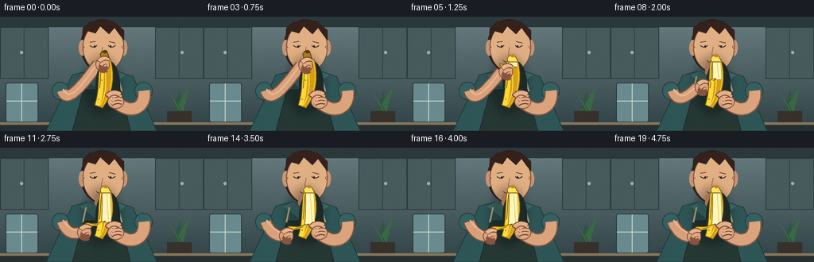
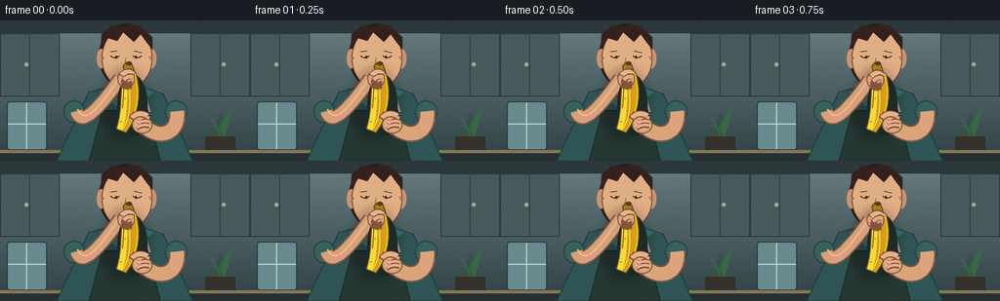

CODING AGENTS AS PIXEL WORLD MODELS
traex/GPT-5.6-Sol · motion_rationality_0007
点击播放 · 原生 RGB 像素
逐轮保存的候选
回放视频、检查图与代码变化。
每份候选均可单独播放。实际图片检查记录在下方工具轨迹中。
候选 01播放与检查图
点击播放 · 原生 RGB 像素


展开代码变化
--- 上一保存版本
+++ 本次保存版本
@@ -0,0 +1,219 @@
+from pathlib import Path
+import math
+import numpy as np
+from PIL import Image, ImageDraw, ImageFilter
+import artifact_io
+
+W,H,N = 256,144,20
+SS=4
+
+def scpts(points): return [(int(x*SS),int(y*SS)) for x,y in points]
+def box(b): return tuple(int(v*SS) for v in b)
+def bezier(p0,p1,p2,p3,n=30):
+ out=[]
+ for t in np.linspace(0,1,n):
+ u=1-t
+ out.append((u**3*p0[0]+3*u*u*t*p1[0]+3*u*t*t*p2[0]+t**3*p3[0],
+ u**3*p0[1]+3*u*u*t*p1[1]+3*u*t*t*p2[1]+t**3*p3[1]))
+ return out
+
+def smooth(x):
+ x=max(0,min(1,x)); return x*x*(3-2*x)
+
+def poly(draw, pts, fill, outline=None, width=1):
+ draw.polygon(scpts(pts),fill=fill)
+ if outline: draw.line(scpts(pts+[pts[0]]),fill=outline,width=width*SS,joint='curve')
+def line(draw, pts, fill, width, joint='curve'):
+ draw.line(scpts(pts),fill=fill,width=max(1,int(width*SS)),joint=joint)
+def ellipse(draw,b,fill,outline=None,width=1):
+ draw.ellipse(box(b),fill=fill,outline=outline,width=width*SS if outline else 1)
+def path_poly(draw, left, right, fill, outline=None, width=1):
+ poly(draw,left+list(reversed(right)),fill,outline,width)
+
+def banana_sides():
+ # Natural, slightly curved upright banana, left and right silhouettes
+ left = bezier((127,53),(122,68),(126,91),(119,111),n=34)
+ right= bezier((139,54),(145,72),(143,97),(129,115),n=34)
+ return left,right
+
+def render(k):
+ # supersampled base with subtle kitchen gradient
+ y=np.arange(H*SS)[:,None]
+ top=np.array([105,126,130.]); bot=np.array([48,66,70.])
+ grad=top[None,None,:]*(1-y[:,:,None]/(H*SS))+bot[None,None,:]*(y[:,:,None]/(H*SS))
+ grad=np.tile(grad,(1,W*SS,1)).astype(np.uint8)
+ im=Image.fromarray(grad,'RGB'); d=ImageDraw.Draw(im)
+
+ # softly lit kitchen, kept subdued so action reads immediately
+ d.rectangle(box((0,0,256,13)),fill=(43,57,60))
+ d.rectangle(box((0,13,61,78)),fill=(72,91,92),outline=(42,57,59),width=SS)
+ d.rectangle(box((195,13,256,78)),fill=(72,91,92),outline=(42,57,59),width=SS)
+ line(d,[(30,13),(30,78)],(48,65,67),1)
+ line(d,[(225,13),(225,78)],(48,65,67),1)
+ ellipse(d,(25,43,29,47),(166,174,157)); ellipse(d,(227,43,231,47),(166,174,157))
+ # side window and blurred plant
+ d.rounded_rectangle(box((7,83,48,133)),radius=3*SS,fill=(105,139,143),outline=(39,55,57),width=SS)
+ line(d,[(27,84),(27,132)],(211,222,209),1); line(d,[(8,106),(47,106)],(211,222,209),1)
+ poly(d,[(218,120),(226,92),(229,121)],(49,85,62))
+ poly(d,[(224,110),(239,86),(230,120)],(57,104,70))
+ poly(d,[(224,113),(210,91),(228,122)],(64,111,74))
+ d.rectangle(box((210,119,241,143)),fill=(54,50,43))
+ # counter
+ d.rectangle(box((0,134,256,144)),fill=(39,48,49))
+ d.rectangle(box((0,133,256,136)),fill=(134,119,92))
+
+ # body: hair behind head, head, ears, neck
+ ellipse(d,(101,3,156,70),(47,31,27))
+ ellipse(d,(99,29,108,49),(202,149,112)); ellipse(d,(151,29,160,49),(202,149,112))
+ ellipse(d,(104,7,156,70),(225,175,132),outline=(111,74,57),width=1)
+ # ears details
+ line(d,[(103,35),(106,38),(103,42)],(158,101,78),1)
+ line(d,[(156,35),(153,38),(156,42)],(158,101,78),1)
+ # hair cap and locks
+ poly(d,[(103,29),(104,14),(113,6),(142,5),(156,17),(156,30),(149,21),(144,14),(137,22),(126,12),(120,21),(110,18)],(53,34,29))
+ # neck
+ d.rounded_rectangle(box((119,57,141,83)),radius=5*SS,fill=(213,158,119))
+ # torso / shirt and apron
+ poly(d,[(91,73),(112,68),(128,78),(145,68),(167,75),(197,144),(58,144)],(47,86,87),outline=(30,58,60))
+ # collar
+ poly(d,[(112,68),(128,78),(119,88),(101,74)],(64,111,109))
+ poly(d,[(145,68),(128,78),(138,88),(158,73)],(64,111,109))
+ poly(d,[(105,92),(151,91),(164,144),(91,144)],(38,56,52),outline=(29,43,41))
+ line(d,[(108,75),(104,94)],(193,173,133),2)
+ line(d,[(148,74),(153,94)],(193,173,133),2)
+ # face looking downward at banana
+ line(d,[(113,32),(120,31)],(75,46,38),1)
+ line(d,[(137,31),(145,33)],(75,46,38),1)
+ line(d,bezier((113,36),(116,39),(119,39),(122,36),10),(49,42,38),1)
+ line(d,bezier((136,36),(139,39),(142,39),(145,36),10),(49,42,38),1)
+ ellipse(d,(118,36,120,39),(39,35,32)); ellipse(d,(138,36,140,39),(39,35,32))
+ line(d,[(129,38),(127,48),(131,49)],(170,112,86),1)
+ line(d,bezier((121,55),(126,59),(133,59),(138,54),14),(133,66,57),1)
+ line(d,bezier((123,54),(128,56),(133,56),(136,54),10),(239,192,165),1)
+
+ # phases: anticipation, then steady downward pull
+ pull=smooth((k-2)/11.0)
+ settle=smooth((k-13)/6.0)
+ # tiny initial twist communicates stem break without noise
+ twist=math.sin(k*1.7)*1.2*(1-pull) if k<5 else 0
+ mx=128 + (103-128)*pull + 1.0*settle
+ my=54 + (105-54)*pull + 0.8*settle
+
+ # contact shadow behind foreground action
+ shadow=Image.new('RGBA',im.size,(0,0,0,0)); sd=ImageDraw.Draw(shadow)
+ sd.ellipse(box((103,48,153,124)),fill=(0,0,0,65))
+ shadow=shadow.filter(ImageFilter.GaussianBlur(5*SS))
+ im=Image.alpha_composite(im.convert('RGBA'),shadow).convert('RGB'); d=ImageDraw.Draw(im)
+
+ # peeling arm from left sleeve to moving wrist, behind fruit
+ # sleeve cuff
+ ellipse(d,(65,82,87,105),(54,97,97),outline=(32,60,61))
+ elbow=(87,111)
+ wrist=(mx-5,my+6)
+ arm_curve=bezier((78,93),(81,101),elbow,wrist,24)
+ line(d,arm_curve,(128,83,65),15)
+ line(d,arm_curve,(216,161,123),12)
+ # highlight on arm
+ line(d,bezier((79,91),(86,102),(93,103),(wrist[0],wrist[1]-2),20),(235,184,143),2)
+
+ # supporting arm from right side, behind banana
+ ellipse(d,(169,82,192,105),(54,97,97),outline=(32,60,61))
+ support_curve=bezier((181,93),(184,112),(168,126),(146,108),28)
+ line(d,support_curve,(132,86,66),17)
+ line(d,support_curve,(219,164,125),14)
+
+ # cast shadow of banana on shirt
+ ellipse(d,(120,55,151,119),(29,42,39))
+
+ left,right=banana_sides()
+ # whole banana peel base with golden outline
+ path_poly(d,left,right,(238,191,35),(112,83,20),1)
+ # shaded side and warm underside
+ sideL=bezier((127,54),(123,70),(127,92),(120,111),28)
+ midL=bezier((132,54),(129,70),(133,93),(125,113),28)
+ path_poly(d,sideL,midL,(255,217,54))
+ sideR=bezier((137,54),(142,73),(140,97),(128,114),28)
+ path_poly(d,midL,sideR,(213,158,22))
+ # banana ridges and speckles
+ line(d,bezier((132,57),(132,74),(136,96),(126,111),25),(255,229,86),1)
+ for x,y0 in [(136,64),(128,80),(137,94),(124,104)]: ellipse(d,(x-0.7,y0-0.7,x+0.7,y0+0.7),(128,91,25))
+
+ # exposed pale fruit progresses down, replacing central peel area
+ boundary=55+42*pull
+ if pull>0.015:
+ # tapered fruit surface from top through current peeled boundary
+ n=28
+ ys=np.linspace(55,boundary,n)
+ l=[];r=[]
+ for yy in ys:
+ q=(yy-55)/60
+ cx=133+4*q-5*q*q
+ wid=5.0+1.6*q
+ l.append((cx-wid,yy)); r.append((cx+wid,yy))
+ path_poly(d,l,r,(255,240,157),(144,112,51),1)
+ # subtle fruit facet
+ facet_l=[(x+1.5,y) for x,y in l]; facet_r=[(x,y) for x,y in r]
+ path_poly(d,facet_l,facet_r,(255,247,184))
+ line(d,[(134,58),(135+(pull*1.5),boundary-2)],(226,207,123),1)
+
+ # split seam before/while opening
+ line(d,bezier((129,54),(126,64),(127,78),(125,90),20),(132,91,24),1)
+
+ # top stem: intact at start; tilts toward pulling fingers
+ if pull<.12:
+ stem=[(128+twist,54),(126+twist,47),(129+twist,43),(135+twist,45),(138+twist,54)]
+ poly(d,stem,(173,124,24),(91,66,20),1)
+ ellipse(d,(129+twist,42,135+twist,46),(84,61,28))
+ else:
+ # short exposed crown at top
+ poly(d,[(127,57),(126,52),(130,48),(136,50),(140,57)],(255,226,91),(132,95,28),1)
+ ellipse(d,(130,47,136,51),(185,139,40))
+
+ # pulled peel ribbon, attachment follows the peel front; broad enough to read
+ if pull>0.025:
+ attach=(127.5,boundary)
+ # two cubic edges from attachment to moving hand, curved outward left
+ c1=(120-6*pull, boundary+7)
+ c2=(110-4*pull, my-12)
+ edge1=bezier(attach,c1,c2,(mx+1,my),22)
+ edge2=bezier((attach[0]+5,attach[1]-1),(127-4*pull,boundary+7),(116-3*pull,my-7),(mx+7,my+2),22)
+ path_poly(d,edge1,edge2,(247,193,27),(116,81,20),1)
+ line(d,bezier((130,boundary),(123,boundary+8),(114,my-5),(mx+4,my+1),18),(255,225,72),1)
+ # dark stem nub held at free end
+ ellipse(d,(mx-1,my-2,mx+7,my+3),(116,80,27),(74,52,24))
+
+ # supporting hand wrapped around lower fruit, fingers on top
+ ellipse(d,(135,98,156,116),(220,165,126),outline=(124,78,61))
+ # palm highlight
+ ellipse(d,(139,100,153,112),(232,181,140))
+ for j,(y1,x2) in enumerate([(101,142),(105,141),(109,140)]):
+ line(d,bezier((153,y1),(149,y1-1),(145,y1-1),(x2,y1+2),12),(119,74,58),4)
+ line(d,bezier((153,y1-1),(149,y1-2),(145,y1-2),(x2,y1+1),12),(230,174,134),3)
+ # thumb crosses banana front
+ line(d,bezier((151,99),(145,94),(138,96),(134,101),16),(128,80,61),7)
+ line(d,bezier((151,98),(145,94),(139,96),(135,100),16),(231,177,136),5)
+
+ # peeling hand and pinching fingers, foreground
+ ellipse(d,(mx-8,my-3,mx+10,my+15),(219,163,124),outline=(123,77,59))
+ # index/thumb pinch the peel end
+ line(d,bezier((mx-3,my+3),(mx,my-2),(mx+5,my-3),(mx+8,my+1),14),(128,78,58),7)
+ line(d,bezier((mx-3,my+2),(mx,my-2),(mx+5,my-2),(mx+8,my+1),14),(235,181,138),5)
+ line(d,bezier((mx-1,my+8),(mx+2,my+3),(mx+6,my+2),(mx+8,my+4),14),(124,76,58),6)
+ line(d,bezier((mx-1,my+7),(mx+2,my+3),(mx+6,my+3),(mx+8,my+4),14),(226,170,129),4)
+ # three curled fingers below palm
+ for j in range(3):
+ yy=my+8+j*2.5
+ line(d,bezier((mx-4,yy),(mx,yy+3),(mx+4,yy+3),(mx+7,yy+1),12),(136,84,63),3)
+
+ # foreground warm light and crisp final reduction
+ arr=np.asarray(im.resize((W,H),Image.Resampling.LANCZOS)).astype(np.int16)
+ # fixed fine film texture to avoid flat vector appearance
+ rng=np.random.default_rng(1447)
+ grain=rng.normal(0,0.75,(H,W,1))
+ arr=np.clip(arr+grain,0,255).astype(np.uint8)
+ return arr
+
+frames=np.stack([render(i) for i in range(N)])
+case_dir=Path(__file__).resolve().parent
+artifact_io.save(frames,case_dir)
+print('saved',frames.shape,frames.dtype)
可观测工具轨迹
实际执行的命令与返回图片。
命令 1exit 0
/bin/bash -lc "cat prompt.txt && printf '\\n---RULES---\\n' && cat GENERATION_RULES.md && printf '\\n---SPEC---\\n' && cat task_spec.json"
命令 2exit 0
/bin/bash -lc "find . -maxdepth 2 -type f -printf '%p\\n' | sort"
命令 3exit 0
/bin/bash -lc "which ffmpeg; which blender; which python3; python3 - <<'PY'
try:
import cv2; print('cv2',cv2.__version__)
except Exception as e: print('no cv2',e)
try:
from PIL import Image; print('pillow ok')
except Exception as e: print('no pillow',e)
PY"命令 4exit 0
/bin/bash -lc 'cat artifact_io.py'
命令 5exit 0
/bin/bash -lc "cat > generate.py <<'PY'
from pathlib import Path
import math
import numpy as np
from PIL import Image, ImageDraw, ImageFilter
import artifact_io
W,H,N = 256,144,20
SS=4
def scpts(points): return [(int(x*SS),int(y*SS)) for x,y in points]
def box(b): return tuple(int(v*SS) for v in b)
def bezier(p0,p1,p2,p3,n=30):
out=[]
for t in np.linspace(0,1,n):
u=1-t
out.append((u**3*p0[0]+3*u*u*t*p1[0]+3*u*t*t*p2[0]+t**3*p3[0],
u**3*p0[1]+3*u*u*t*p1[1]+3*u*t*t*p2[1]+t**3*p3[1]))
return out
def smooth(x):
x=max(0,min(1,x)); return x*x*(3-2*x)
def poly(draw, pts, fill, outline=None, width=1):
draw.polygon(scpts(pts),fill=fill)
if outline: draw.line(scpts(pts+[pts[0]]),fill=outline,width=width*SS,joint='curve')
def line(draw, pts, fill, width, joint='curve'):
draw.line(scpts(pts),fill=fill,width=max(1,int(width*SS)),joint=joint)
def ellipse(draw,b,fill,outline=None,width=1):
draw.ellipse(box(b),fill=fill,outline=outline,width=width*SS if outline else 1)
def path_poly(draw, left, right, fill, outline=None, width=1):
poly(draw,left+list(reversed(right)),fill,outline,width)
def banana_sides():
# Natural, slightly curved upright banana, left and right silhouettes
left = bezier((127,53),(122,68),(126,91),(119,111),n=34)
right= bezier((139,54),(145,72),(143,97),(129,115),n=34)
return left,right
def render(k):
# supersampled base with subtle kitchen gradient
y=np.arange(H*SS)[:,None]
top=np.array([105,126,130.]); bot=np.array([48,66,70.])
grad=top[None,None,:]*(1-y[:,:,None]/(H*SS))+bot[None,None,:]*(y[:,:,None]/(H*SS))
grad=np.tile(grad,(1,W*SS,1)).astype(np.uint8)
im=Image.fromarray(grad,'RGB'); d=ImageDraw.Draw(im)
# softly lit kitchen, kept subdued so action reads immediately
d.rectangle(box((0,0,256,13)),fill=(43,57,60))
d.rectangle(box((0,13,61,78)),fill=(72,91,92),outline=(42,57,59),width=SS)
d.rectangle(box((195,13,256,78)),fill=(72,91,92),outline=(42,57,59),width=SS)
line(d,[(30,13),(30,78)],(48,65,67),1)
line(d,[(225,13),(225,78)],(48,65,67),1)
ellipse(d,(25,43,29,47),(166,174,157)); ellipse(d,(227,43,231,47),(166,174,157))
# side window and blurred plant
d.rounded_rectangle(box((7,83,48,133)),radius=3*SS,fill=(105,139,143),outline=(39,55,57),width=SS)
line(d,[(27,84),(27,132)],(211,222,209),1); line(d,[(8,106),(47,106)],(211,222,209),1)
poly(d,[(218,120),(226,92),(229,121)],(49,85,62))
poly(d,[(224,110),(239,86),(230,120)],(57,104,70))
poly(d,[(224,113),(210,91),(228,122)],(64,111,74))
d.rectangle(box((210,119,241,143)),fill=(54,50,43))
# counter
d.rectangle(box((0,134,256,144)),fill=(39,48,49))
d.rectangle(box((0,133,256,136)),fill=(134,119,92))
# body: hair behind head, head, ears, neck
ellipse(d,(101,3,156,70),(47,31,27))
ellipse(d,(99,29,108,49),(202,149,112)); ellipse(d,(151,29,160,49),(202,149,112))
ellipse(d,(104,7,156,70),(225,175,132),outline=(111,74,57),width=1)
# ears details
line(d,[(103,35),(106,38),(103,42)],(158,101,78),1)
line(d,[(156,35),(153,38),(156,42)],(158,101,78),1)
# hair cap and locks
poly(d,[(103,29),(104,14),(113,6),(142,5),(156,17),(156,30),(149,21),(144,14),(137,22),(126,12),(120,21),(110,18)],(53,34,29))
# neck
d.rounded_rectangle(box((119,57,141,83)),radius=5*SS,fill=(213,158,119))
# torso / shirt and apron
poly(d,[(91,73),(112,68),(128,78),(145,68),(167,75),(197,144),(58,144)],(47,86,87),outline=(30,58,60))
# collar
poly(d,[(112,68),(128,78),(119,88),(101,74)],(64,111,109))
poly(d,[(145,68),(128,78),(138,88),(158,73)],(64,111,109))
poly(d,[(105,92),(151,91),(164,144),(91,144)],(38,56,52),outline=(29,43,41))
line(d,[(108,75),(104,94)],(193,173,133),2)
line(d,[(148,74),(153,94)],(193,173,133),2)
# face looking downward at banana
line(d,[(113,32),(120,31)],(75,46,38),1)
line(d,[(137,31),(145,33)],(75,46,38),1)
line(d,bezier((113,36),(116,39),(119,39),(122,36),10),(49,42,38),1)
line(d,bezier((136,36),(139,39),(142,39),(145,36),10),(49,42,38),1)
ellipse(d,(118,36,120,39),(39,35,32)); ellipse(d,(138,36,140,39),(39,35,32))
line(d,[(129,38),(127,48),(131,49)],(170,112,86),1)
line(d,bezier((121,55),(126,59),(133,59),(138,54),14),(133,66,57),1)
line(d,bezier((123,54),(128,56),(133,56),(136,54),10),(239,192,165),1)
# phases: anticipation, then steady downward pull
pull=smooth((k-2)/11.0)
settle=smooth((k-13)/6.0)
# tiny initial twist communicates stem break without noise
twist=math.sin(k*1.7)*1.2*(1-pull) if k<5 else 0
mx=128 + (103-128)*pull + 1.0*settle
my=54 + (105-54)*pull + 0.8*settle
# contact shadow behind foreground action
shadow=Image.new('RGBA',im.size,(0,0,0,0)); sd=ImageDraw.Draw(shadow)
sd.ellipse(box((103,48,153,124)),fill=(0,0,0,65))
shadow=shadow.filter(ImageFilter.GaussianBlur(5*SS))
im=Image.alpha_composite(im.convert('RGBA'),shadow).convert('RGB'); d=ImageDraw.Draw(im)
# peeling arm from left sleeve to moving wrist, behind fruit
# sleeve cuff
ellipse(d,(65,82,87,105),(54,97,97),outline=(32,60,61))
elbow=(87,111)
wrist=(mx-5,my+6)
arm_curve=bezier((78,93),(81,101),elbow,wrist,24)
line(d,arm_curve,(128,83,65),15)
line(d,arm_curve,(216,161,123),12)
# highlight on arm
line(d,bezier((79,91),(86,102),(93,103),(wrist[0],wrist[1]-2),20),(235,184,143),2)
# supporting arm from right side, behind banana
ellipse(d,(169,82,192,105),(54,97,97),outline=(32,60,61))
support_curve=bezier((181,93),(184,112),(168,126),(146,108),28)
line(d,support_curve,(132,86,66),17)
line(d,support_curve,(219,164,125),14)
# cast shadow of banana on shirt
ellipse(d,(120,55,151,119),(29,42,39))
left,right=banana_sides()
# whole banana peel base with golden outline
path_poly(d,left,right,(238,191,35),(112,83,20),1)
# shaded side and warm underside
sideL=bezier((127,54),(123,70),(127,92),(120,111),28)
midL=bezier((132,54),(129,70),(133,93),(125,113),28)
path_poly(d,sideL,midL,(255,217,54))
sideR=bezier((137,54),(142,73),(140,97),(128,114),28)
path_poly(d,midL,sideR,(213,158,22))
# banana ridges and speckles
line(d,bezier((132,57),(132,74),(136,96),(126,111),25),(255,229,86),1)
for x,y0 in [(136,64),(128,80),(137,94),(124,104)]: ellipse(d,(x-0.7,y0-0.7,x+0.7,y0+0.7),(128,91,25))
# exposed pale fruit progresses down, replacing central peel area
boundary=55+42*pull
if pull>0.015:
# tapered fruit surface from top through current peeled boundary
n=28
ys=np.linspace(55,boundary,n)
l=[];r=[]
for yy in ys:
q=(yy-55)/60
cx=133+4*q-5*q*q
wid=5.0+1.6*q
l.append((cx-wid,yy)); r.append((cx+wid,yy))
path_poly(d,l,r,(255,240,157),(144,112,51),1)
# subtle fruit facet
facet_l=[(x+1.5,y) for x,y in l]; facet_r=[(x,y) for x,y in r]
path_poly(d,facet_l,facet_r,(255,247,184))
line(d,[(134,58),(135+(pull*1.5),boundary-2)],(226,207,123),1)
# split seam before/while opening
line(d,bezier((129,54),(126,64),(127,78),(125,90),20),(132,91,24),1)
# top stem: intact at start; tilts toward pulling fingers
if pull<.12:
stem=[(128+twist,54),(126+twist,47),(129+twist,43),(135+twist,45),(138+twist,54)]
poly(d,stem,(173,124,24),(91,66,20),1)
ellipse(d,(129+twist,42,135+twist,46),(84,61,28))
else:
# short exposed crown at top
poly(d,[(127,57),(126,52),(130,48),(136,50),(140,57)],(255,226,91),(132,95,28),1)
ellipse(d,(130,47,136,51),(185,139,40))
# pulled peel ribbon, attachment follows the peel front; broad enough to read
if pull>0.025:
attach=(127.5,boundary)
# two cubic edges from attachment to moving hand, curved outward left
c1=(120-6*pull, boundary+7)
c2=(110-4*pull, my-12)
edge1=bezier(attach,c1,c2,(mx+1,my),22)
edge2=bezier((attach[0]+5,attach[1]-1),(127-4*pull,boundary+7),(116-3*pull,my-7),(mx+7,my+2),22)
path_poly(d,edge1,edge2,(247,193,27),(116,81,20),1)
line(d,bezier((130,boundary),(123,boundary+8),(114,my-5),(mx+4,my+1),18),(255,225,72),1)
# dark stem nub held at free end
ellipse(d,(mx-1,my-2,mx+7,my+3),(116,80,27),(74,52,24))
# supporting hand wrapped around lower fruit, fingers on top
ellipse(d,(135,98,156,116),(220,165,126),outline=(124,78,61))
# palm highlight
ellipse(d,(139,100,153,112),(232,181,140))
for j,(y1,x2) in enumerate([(101,142),(105,141),(109,140)]):
line(d,bezier((153,y1),(149,y1-1),(145,y1-1),(x2,y1+2),12),(119,74,58),4)
line(d,bezier((153,y1-1),(149,y1-2),(145,y1-2),(x2,y1+1),12),(230,174,134),3)
# thumb crosses banana front
line(d,bezier((151,99),(145,94),(138,96),(134,101),16),(128,80,61),7)
line(d,bezier((151,98),(145,94),(139,96),(135,100),16),(231,177,136),5)
# peeling hand and pinching fingers, foreground
ellipse(d,(mx-8,my-3,mx+10,my+15),(219,163,124),outline=(123,77,59))
# index/thumb pinch the peel end
line(d,bezier((mx-3,my+3),(mx,my-2),(mx+5,my-3),(mx+8,my+1),14),(128,78,58),7)
line(d,bezier((mx-3,my+2),(mx,my-2),(mx+5,my-2),(mx+8,my+1),14),(235,181,138),5)
line(d,bezier((mx-1,my+8),(mx+2,my+3),(mx+6,my+2),(mx+8,my+4),14),(124,76,58),6)
line(d,bezier((mx-1,my+7),(mx+2,my+3),(mx+6,my+3),(mx+8,my+4),14),(226,170,129),4)
# three curled fingers below palm
for j in range(3):
yy=my+8+j*2.5
line(d,bezier((mx-4,yy),(mx,yy+3),(mx+4,yy+3),(mx+7,yy+1),12),(136,84,63),3)
# foreground warm light and crisp final reduction
arr=np.asarray(im.resize((W,H),Image.Resampling.LANCZOS)).astype(np.int16)
# fixed fine film texture to avoid flat vector appearance
rng=np.random.default_rng(1447)
grain=rng.normal(0,0.75,(H,W,1))
arr=np.clip(arr+grain,0,255).astype(np.uint8)
return arr
frames=np.stack([render(i) for i in range(N)])
case_dir=Path(__file__).resolve().parent
artifact_io.save(frames,case_dir)
print('saved',frames.shape,frames.dtype)
PY
python3 generate.py"命令 6exit 0
/bin/bash -lc "python3 - <<'PY'
from pathlib import Path
import numpy as np
from PIL import Image
p=Path('.')
z=np.load('pixels.npz')['pixels']
print('packed tensor:',z.shape,z.dtype)
files=sorted((p/'frames').glob('*.png'))
print('png count:',len(files),'first/last:',files[0].name,files[-1].name)
ims=np.stack([np.array(Image.open(f)) for f in files])
print('frames:',ims.shape,ims.dtype,'range',ims.min(),ims.max())
d=np.mean(np.abs(np.diff(ims.astype(float),axis=0)),axis=(1,2,3))
print('mean interframe deltas:',np.round(d,2).tolist())
for f in ['pixels.npz','inspection.png','transition_check.png','index.html','generate.py']:
q=p/f; print(f,q.stat().st_size)
PY"命令 7exit 0
/bin/bash -lc 'python3 -m py_compile generate.py && git status --short'
保存候选 1 份；完成命令 7 次；可验证图片返回 0 张。原始 API 响应与完整日志保留在本地。